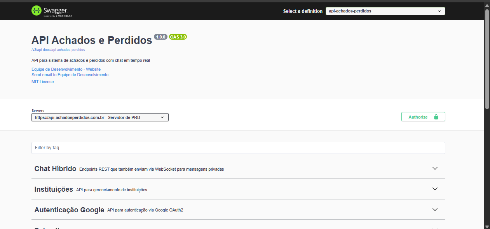

Olá, meu nome é
Augusto Farias dos Santos
Desenvolvedor Fullstack focado em .NET e Angular
Transformando ideias em software escalável e soluções inovadoras.
Ver ProjetosSobre Mim
Olá! Sou Augusto, um desenvolvedor fullstack. Minha jornada na programação começou com C# e .NET, e desde então venho expandindo meus conhecimentos para o ecossistema completo de desenvolvimento web.
Atualmente, foco em tecnologias como C#, .NET Core, Angular, e SQL Server.
Estou sempre em busca de novos desafios e oportunidades para aplicar minhas habilidades. Vamos construir algo incrível juntos!
Experiência
Desenvolvedor Backend C#
Trabalha Brasil
2025 - Presente
- ▹ Desenvolvimento do produto Trabalha Brasil com C# e .NET Core
- ▹ Arquitetura DDD
- ▹ Metodologia Ágil Scrum
- ▹ Otimização de performance e implementação de práticas de CI/CD
Desenvolvedor Fullstack
BNE - Banco Nacional de Empregos
2024 - 2025
- ▹ Desenvolvimento de aplicações web com Angular e ASP.NET Core
- ▹ Criação de Api's robustas e escaláveis
- ▹ Arquitetura limpa e Código limpo
- ▹ Participação em projetos ágeis com Scrum
Auxiliar de desenvolvimento
Projeto IFBLOG - IFPR Campus Colombo
2023 - 2024
- ▹ Desenvolvimento de sistemas Web com PHP e MySQL
- ▹ Produto focado em juntar todos os TCC's do IFPR Campus Colombo
- ▹ Desenvolvimento de um Monolito com PHP, MySQL, Bootstrap, JavaScript e HTML
- ▹ Participação em projetos ágeis com Scrum
Projetos
API de Clima
Sistema de previsão do tempo com integração OpenStreetMap, WeatherAPI e Pexels. Interface 3D com Three.js e mapas interativos.
API Achados e Perdidos
Api para criação do meu TCC chamado achados e perdidos foi criada para suprir uma necessidade do campus no qual estudei.